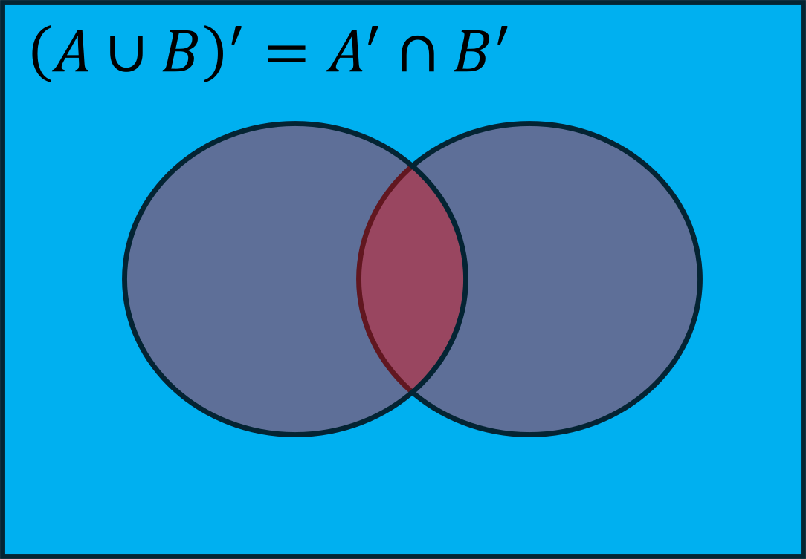
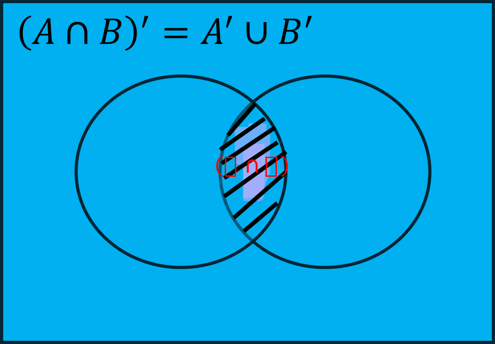
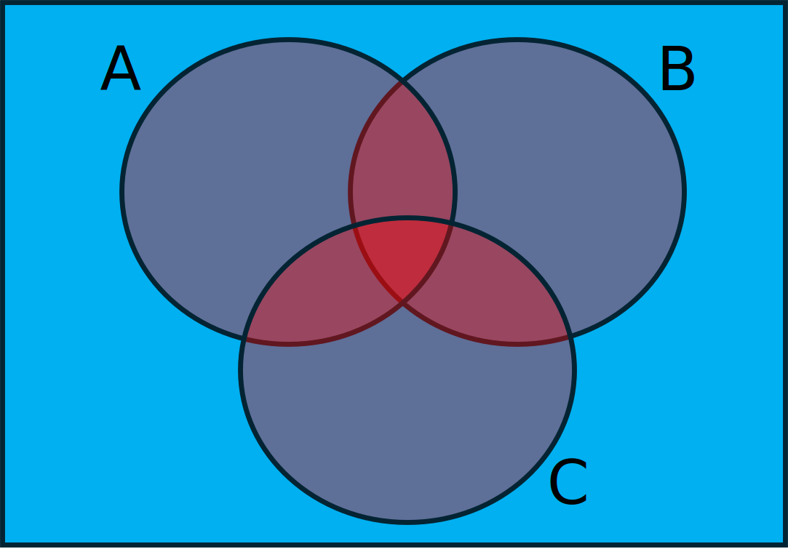
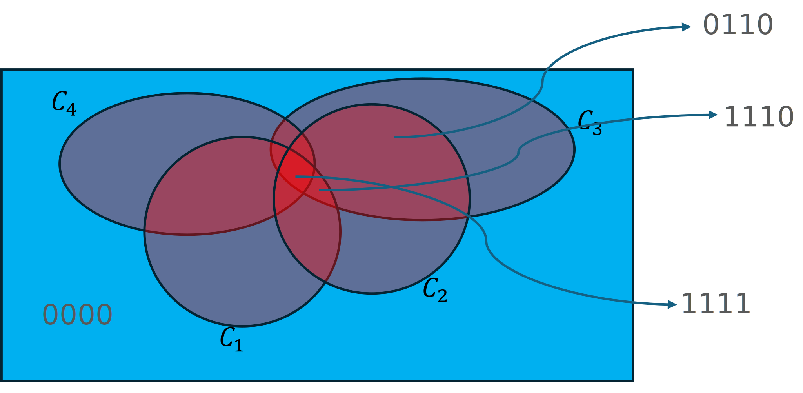

Homework 2 Solutions
Check Due Date and Office Hours on Canvas
- Law 1: The blue colored region is the final for LHS and RHS 
- Law 2: All blue colored region except the shaded part is the final for LHS and RHS 
(Events) Textbook Section 2.1 #1 (Textbook notation for sample notation is \(\mathcal{S}\))
\(\Omega = \{1324,3124,1342,3142,2314,3214,2341,3241, 1423,4123,1432,4132,2413,4213,2431,4231\}\)
\(A = \{1324, 1342, 1423, 1432\}\)
\(B = \{2314, 2341, 2413, 2431, 3214, 3241,4213,4231 \}\)
\(A \cup B = \{1324, 1342, 1423, 1432, 2314, 2341, 2413, 2431, 3214, 3241,4213,4231 \}\)
\(A \cap B = \{ \}\) (Null set because either 1 or 2, not both, can get into the championship)
\(A' = \{3124,3142,2314,3214,2341,3241,4123,4132,2413,4213,2431,4231\}\)
(Events) Textbook Section 2.1 #3 Though not asked, it is a good idea to first write down all possible outcomes (aka Sample Space)
\(\Omega = \{SSS,SSF,SFS,FSS, SFF, FSF, FFS, FFF\}\) (\(2^3\) possible outcomes)
\(A = \{SSF,SFS,FSS\}\)
\(B = \{SSS,SSF,SFS,FSS \}\)
\(C = \{SSS,SSF,SFS\}\)
\(C' = \{FSS, SFF, FSF, FFS, FFF\}\)
\(A \cup C = \{SSF,SFS,FSS, SFF, FSF, FFS, FFF\}\)
\(A \cap C = \{FSS\}\)
\(B \cup C = \{SSS,SSF,SFS,FSS, SFF, FSF, FFS, FFF\}\)
\(B \cap C = \{FSS\}\)
(Events, Independence, Disjointness) Textbook Section 2.2 #17
There is a possibility (an outcome in Sample Space) that the next request is neither SPSS or SAS.
\(P(A') = 1 - 0.3 = 0.7\)
\(P(A \cup B) = P(A) + P(B) - P(A \cap B) = 0.3 + 0.5 - 0 = 0.8\) (\(P(A \cap B) = 0\) assumed because the request cannot be involving SPSS and SAS at the same time, also otherwise we cannot calculate the values)
Use DeMorgan’s Laws (and first axiom of probability) \(P(A' \cap B') = P((A \cup B)') = 1 - P(A\cup B) = 0.2\)
(Probability) Textbook Section 2.2 #23
15 (\(=\) \(^6C_2\)) equally likely outcomes
\(\frac{^2C_2}{^6C_2}\)
\(\frac{^4C_2}{^6C_2}\)
\(\frac{^4C_2 + 4}{^6C_2}\)
\(\frac{4\times2}{^6C_2}\)
(Probability/Counting) Textbook Section 2.3 #40
\(\frac{12!}{3^4}\)
(Assuming all outcomes are equally likely) \(\frac{4!}{\frac{12!}{3^4}}\)
We have a deck of randomly shuffled typical playing cards (if you do not know about cards, please check online).
- If we choose one card at random,
- \(\Omega =\) All single cards. \(n(\Omega) = 52\)
- \(\frac{26}{52}\)
- If we choose two cards together randomly,
- \(\Omega =\) All combinations of different cards. \(n(\Omega) =\) \(52 \choose 2\)
- \(\frac{26 \choose 2}{52 \choose 2}\)
- \(\frac{26 \choose 1 }{52 \choose 2} \times \frac{26 \choose 1 }{52 \choose 2}\)
- If we choose two cards one-after-another after replacing the card
- \(\Omega =\) All combinations including choosing the same card twice, \(n(\Omega) =\) \(52 \times 52\)
- \(\frac{26 \times 26}{52 \times 52}\)
- \(\frac{26 \times 26}{52 \times 52}\)
- If we choose one card at random,
(A classical problem) You need to apply Bayes’ Theorem Let \(A\) denote the event that I have COVID-19 \(\implies\) \(A'\) is the event that I do not have COVID-19. \(A\) and \(A'\) form mutually exlusive and exhaustive events such that \(P(A) + P(A') = 1\). Let \(B\) denote the event that I tested positive. We need to find \(P(A|B)\)
\[P(A|B) = \frac{P(B|A)P(A)}{P(B|A)P(A) + P(B|A')P(A')}\]
\[P(A) = 0.1 \implies P(A') = 0.9\]
\[P(B|A) = 0.99, P(B|A') = 0.02\]
\(\implies P(A|B) = \frac{0.99 \times 0.1 }{0.99 \times 0.1 + 0.02 \times 0.9} = 84.6\%\) (surprising?)
- Textbook Section 2.4 #60 (Another application of Bayes’ Theorem) We are only talking about light aircraft, so you do not need to be thinking about other aircrafts (for example, you do not need to worry about \(P(Discovered|NotLightAircraft)\))
Given light aircraft, \(P(Discovered) = 0.7\) \(P(YesLocator|Discovered) = 0.6\) \(P(NoLocator|NotDiscovered) = 0.9\)
- \[P(NotDiscovered|YesLocator) = \frac{P(YesLocator|NotDiscovered)P(NotDiscovered)}{P(YesLocator|NotDiscovered)P(NotDiscovered) + P(YesLocator|Discovered)P(Discovered)}\]
- \(P(YesLocator|NotDiscovered) = 1 - 0.9 = 0.1\)
- \(P(NotDiscovered) = 1 - 0.7 = 0.3\)
\[P(NotDiscovered|YesLocator) = \frac{0.1\times 0.3}{0.1\times 0.3 + 0.6 \times 0.7} = \frac{3}{45} = \frac{1}{15}\]
-  \(P(A \cup B \cup C) = P(A) + P(B) + P(C) - P(A \cap B) - P(B \cap C) - P(C \cap A) + P(A \cap B \cap C)\)
\(P(A) = 0.75\)
\(P(B|A) = \frac{P(A \cap B)}{P(A)} = 0.9 \implies P(A \cap B) = 0.9 \times 0.75 = 0.675\)
\(P(B|A') = \frac{P(A' \cap B)}{P(A')} = 0.8 \implies P(A' \cap B) = 0.8 \times (1-0.75) = 0.2\)
\(P(B) = P(A \cap B) + P(A' \cap B) = 0.875\)
\(P(C|A \cap B) = \frac{P(A \cap B \cap C)}{P(A \cap B)} = 0.8 \implies P(A \cap B \cap C) = 0.8 \times 0.675 = 0.54\) (Answer (b))
\(P(C|A \cap B') = \frac{P(A \cap B' \cap C)}{P(A \cap B')} = 0.6\)
- \(P(A) = P(A \cap B) + P(A \cap B') \implies P(A \cap B') = 0.75 - 0.675 = 0.075\)
- \(\implies P(A \cap B' \cap C) = 0.6 \times 0.075 = 0.045\)
\(P(C|A' \cap B) = \frac{P(A' \cap B \cap C)}{P(A' \cap B)} = 0.6 \implies P(A' \cap B \cap C) = 0.6 \times 0.2 = 0.12\)
- \(\implies P(B \cap C) = P(A' \cap B \cap C) + P(A \cap B \cap C) = 0.12 + 0.54 = 0.66\) (Answer (c))
\(P(C|A' \cap B') = \frac{P(A' \cap B' \cap C)}{P(A' \cap B')} = 0.3\)
- \(P(A'\cap B') = P((A \cup B)') = 1- P(A \cup B) = 1 - P(A) - P(B) +P(A \cap B) = 1 - 0.75 - 0.875 + 0.675 = 0.05\)
- \(\implies P(A' \cap B' \cap C) = 0.3 \times 0.05 = 0.015\)
- \(P(C) = P(A' \cap B' \cap C) + P(A \cap B' \cap C) + P(A' \cap B \cap C) + P(A \cap B \cap C) = 0.015 + (0.66-0.54) + 0.045 +0.54 = 0.72\) (Answer (d))
(Answer (e)) \(P(A|B \cap C) = \frac{P(A \cap B \cap C)}{P(B \cap C)} = \frac{0.54}{0.66} = 0.81\)
- \(P(componentworks) = 0.9\) All components are independent. Lower branch works only if both \(C_3\) and \(C_4\) (\(\cap\)) work. Upper branch works if either \(C_1\) or \(C_2\) works (\(\cup\)). System works if either upper branch or lower branch works (also if both works).
- \(P(C_3 \cap C_4) = 0.9 \times 0.9 = 0.81\)
\(P(C_1 \cup C_2) = P(C_1) + P(C_2) - P(C_1 \cap C_2) = 1.8 - 0.81 = 0.99\)
\(P(system) = P((C_1 \cup C_2) \cup (C_3 \cap C_4)) = P(C_1 \cup C_2) + P(C_3 \cap C_4) - P((C_1 \cup C_2) \cap (C_3 \cap C_4))\) \(\implies P(system) = 0.99 +0.81 - (0.99 \times 0.81) = 0.9981\)
- Note that our defintion of events \(C_1, C_2, C_3, C_4\) and the ‘system’ must be subsets of sample space.
- One way to define Sample Space \(\Omega = \{0000,0001,0011,..., \}\) with \(2^4 = 16\) possible outcomes. Where \(0000\) indicates all components are not working, \(0001\) indicates fourth component is working, \(0001\) indicates third and fourth components are working, and so on. Possible outcomes when system will work are \(\{0111,1011\}\). Note that the outcomes are not “equally likely”.
- Venn diagram will have four events. Only some outcomes are marked. The probability values are not marked. 
- Car manufacturing can be considered an assembly of 500 independent components. If 99.9% of cars needs to be defect-free,
- If \(p\) is the required probability \((1-p)^{500} = 0.999 \implies (1-p) \approx 0.999998 \implies p = 0.000002 = 2 ppm\)
- Similar to the provious problem each outcome will have 500 ’0’s and ’1’s. \(\Omega = \{\underbrace{0000...000}_{500 components},\underbrace{0000...001}_{500 components},...,\underbrace{111...111}_{500 components} \}\) making a total of \(2^{500}\) possible outcomes. You can imagine a Venn diagram with 500 circles.